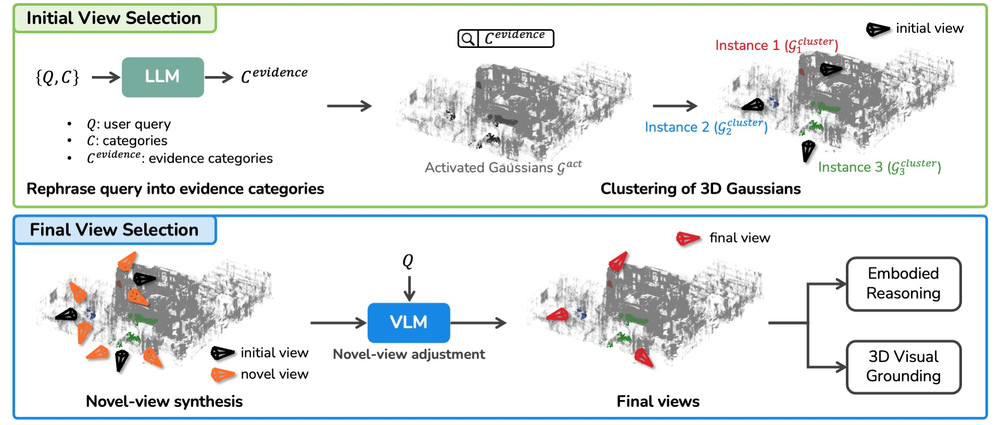

Vision-Language Models (VLMs) have demonstrated strong reasoning capabilities over images and videos, yet their application to embodied scene understanding often constrained by the fixed viewpoints stored in episodic RGB-D memories. These observations may fail to capture query-relevant evidence due to occlusions, object truncation, restricted fields of view, or suboptimal view composition. We present \nickname, a framework that introduces novel view synthesis into the VLM reasoning process by leveraging 3D Gaussian Splatting (3DGS). Given a user query about a 3D scene, \nickname retrieves relevant observations and synthesizes query-conditioned viewpoints that reveal the visual evidence needed to answer the query and ground the referred entities in 3D. Experiments show that query-conditioned novel view synthesis improves both embodied reasoning and 3D grounding over fixed-view memory and language-embedded 3DGS baselines.

In the initial view selection, the query is first rephrased into relevant semantic categories \(\mathcal{C}^{evidence}\) by a LLM, activated 3D Gaussians associated with those categories are grouped into distinct spatial clusters, and we select the optimal initial views that best cover each cluster from the initial input views. In the final view selection, multiple novel views around selected views are synthesized by rendering from the reconstructed 3DGS and are passed to the VLM for accurate reasoning; thereby the most informative views are identified and result in the final answer to the query.
@inproceedings{yu2026splatreasoner,
title={SplatReasoner: Enhancing Embodied Reasoning and Grounding by Novel View Synthesis},
author={Yu-Ji, Kim and Lee, Dahye and Jun-Seong, Kim and Hyeon-Woo, Nam and Kim, GeonU and Kwon, Yongjin and Wang, Yu-Chiang Frank and Choe, Jaesung and Oh, Tae-Hyun},
booktitle={ECCV},
year={2026}
}